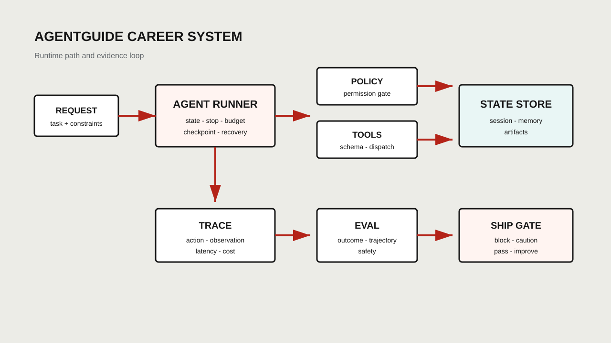
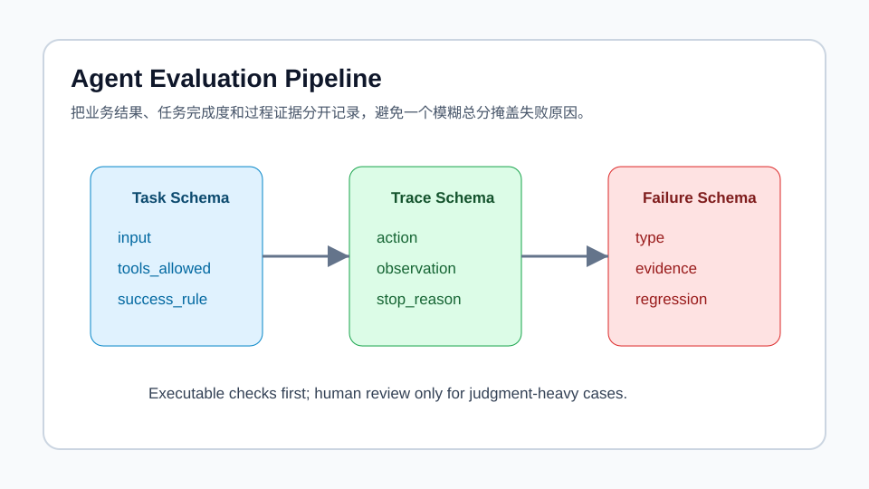
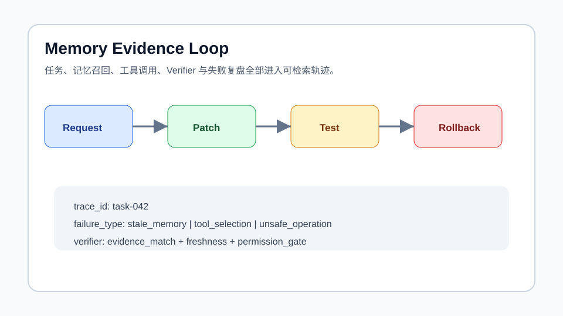

开源
作者 / 维护者
AgentGuide · Agent 求职通关指南
开源项目

负责知识体系、求职流程、项目证据链和面试材料的系统化组织。
6k+个人开源项目 stars
PUBLIC DEMO · TEMPLATE CASE
大模型算法工程师 / Agent 开发与 Agent 算法
清华计算机背景，大模型算法工程师，围绕 Agent 决策优化、自纠错 RAG、长程记忆和 AgentGuide 开源体系，把项目证据链、面试题库、简历模板和作品集串成可复用求职系统。
公开模板演示案例：经历与指标来自用户指定的 LLM-Resume-Template 公开模板，不代表真实候选人。
顺着时间线，一段一段讲述经历、项目、证据和面试可追问点。
作者 / 维护者
开源项目

负责知识体系、求职流程、项目证据链和面试材料的系统化组织。
清华大学
围绕 Agent 决策优化、分层规划、样本效率和搜索增强组织研究叙事。
查看详情个人 Agent 项目

覆盖检索策略、反思查询、多路召回、重排序和消融验证。
硕士
硕士 · 计算机学院 | 计算机科学与技术 | 硕士 | 专业排名前 5%
个人 Agent 项目

把长对话问题拆成工作记忆、短期摘要、长期记忆、混合检索和冲突更新。
学士
学士 · 计算机系 | 计算机科学与技术 | 学士
技能必须能回到时间轴里的项目和证据，不单独堆关键词。
熟悉 LLaMA 等主流模型架构，以及 RLHF、DPO 等偏好对齐方法。
掌握 RAG、工具调用、ReAct、自纠错检索和长程记忆等 Agent 应用技术。
熟悉 LLaMA 等主流模型架构，以及 RLHF、DPO、PPO、MCTS 等偏好对齐、强化学习和搜索增强方法。
如果你对我的 Agent 项目、研究方向或岗位匹配感兴趣，欢迎通过以下方式联系。